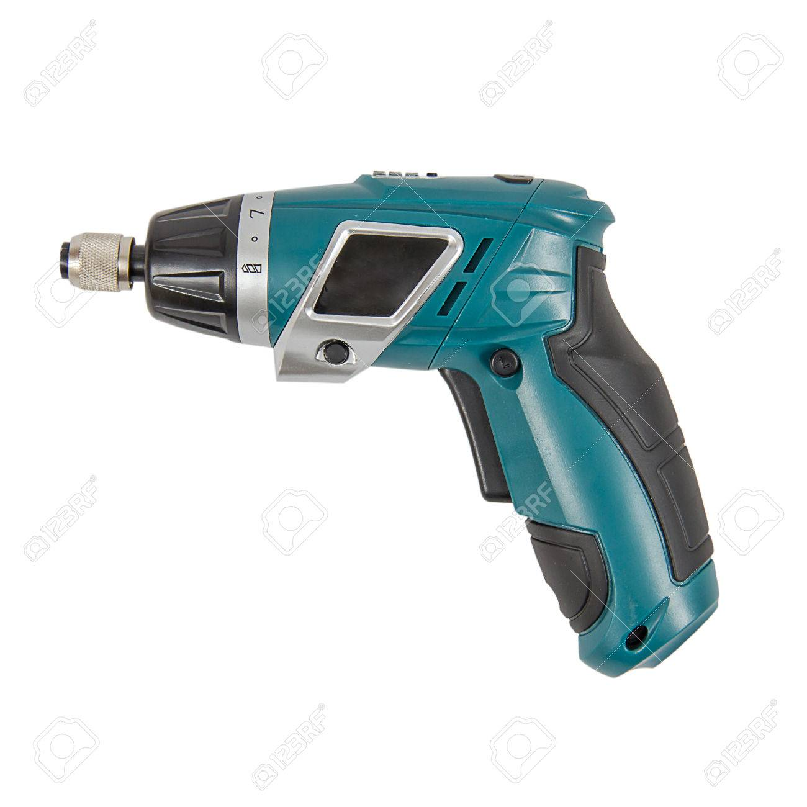

Producto elegido: Taladro automático para tuberías
¿Por qué has decidido desarrollar este producto?
La idea surge de uno de las situaciones más desagradables que te puedes encontrar en el hogar: Un fregadero / lavabo atascado.
Los productos químicos valen para mantenimiento, pero son caros y no suelen ser eficaces cuando el atasco se ha consolidado.
Los profesionales de fontanería suelen usar varillas flexibles para este tipo de atascos, y en ocasiones la adjuntan a un taladro, pero no hay en el mercado un taladro automático específico para esta tarea.
¿Qué tipo de innovación aplicará este producto?
Incorporaría una innovación tecnológica, a priori sencilla y a bajo coste.
Consistiría en un taladro automático pequeño con batería, no demasiado potente para no dañar la tubería, pero si lo suficiente como para mover la varilla con la fuerza suficiente.
La varilla saldría del propio taladro, y también se recogería automáticamente, con un sistema similar al de un metro.
¿Qué resultado esperamos obtener con este producto?
Resultaría un producto de bajo coste que puede tener tanto un uso profesional como familiar y que puede solucionar un problema común e incómodo del día a día.
El cliente potencial son las familias, que lo comprarían por el ahorro que supondría en productos y en llamar al fontanero. Producto adecuado para Teletienda.